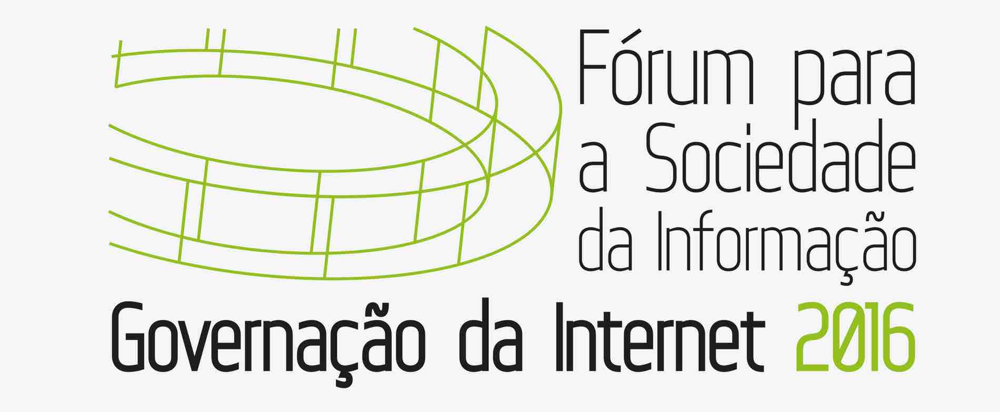

Site do ISOC PT
Eventos
2019-2020
2017-2018
2016
2011-2015
Documentação
Internet Society (ISOC) - Portugal
Eventos e Posições - 2016
No ano de 2016 o ISOC PT organizou ou coorganizou 3 eventos:
Debate sobre IoT, segurança e privacidade, no dia 12 de Maio no IST em Lisboa
Debate sobre a adoção do IPv6 em Portugal (também ao nível aplicação), evento que teve lugar em Lisboa no Hotel Fénix em Junho
Internet Governance Forum Portugal 2016 em Novembro no Campus do IAPMEI em Lisboa
Eventos de 2016
Debate sobre IoT, segurança e privacidade
Agenda
A posição da Internet Society
Intervenção de Augusto Casaca
Intervenção da Narrow Net
Intervenção de José Pacheco Pereira
Debate sobre a adoção do IPv6 em Portugal
Intervenção de Mário de Almeida
Intervenção do RIPE NCC
Internet Governance Forum Portugal 2016

O ISOC Portugal e a Governação da Internet
Agenda do debate sobre Net Neutrality
Net Neutrality na Perspetiva da Internet Society
Introdução ao debate sobre Net Neutrality
Relato do debate sobre Net Neutrality
Mensagens de Lisboa
Site do evento
Para nos contactar
Internet Society - Portuguese Chapter
Departamento de Informática da FCT/UNL - Campus da Caparica
2859-516 Monte Caparica - Portugal
Email: secretariado at isoc.pt / direcao at isoc.pt
Siga-nos no Facebook
Siga-nos no Twitter